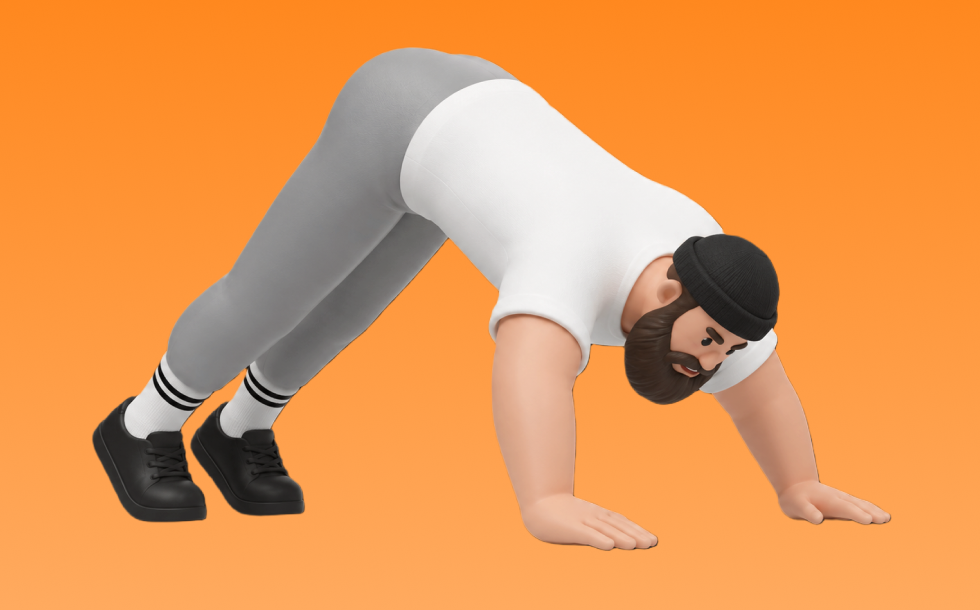

パイク・プッシュ・アップ

パイク・プッシュ・アップとは、自重を使って「押す」動作で肩（三角筋）を中心に鍛える種目です。腰を高く持ち上げて逆V字姿勢を作り、頭を床へ近づけて押し戻す動作を繰り返します。オーバーヘッドプレスに近い刺激が得られるのが特徴です。
- 対象部位
- 肩
- 器具
- 自重
- 記録形式
- 回数
- 別名
- パイクプッシュアップ / パイク腕立て / pike pushup / pike push-up
YouTube動画
-
【自重最強の肩トレ】パイクプッシュアップ徹底解説
-
強靭な肩を作る！パイク・プッシュアップとは❓
-
肩トレの基礎！パイクプッシュアップをマスターすべし！【カリステニクス・自重トレ】
-
男らしい肩幅を作る方法
-
腕立て伏せ30回を確実にこなす！3セット集中メニュー
-
【効果絶大】3分間で肩をデカくする最高強度の筋トレ
-
【たった10回】騙されたと思って30日間この筋トレを試してみてください。
-
【毎日3分】爆速で腹筋を割る鬼のプランク7種目
-
【ダンベル買ったらコレやるべし】ダンベル定番トレーニングBEST10
YouTubeショート
-
【パイク・プッシュアップの正しいやり方】肩の前部分に効く！三角筋強化プッシュアップ｜Training Movie 100｜Tarzan Web
-
How to do Pike push up? #calisthenics #fitness #workout #bodyweighttraining #homeworkout
-
正しいショルダープレス4つのポイント #筋トレ
-
もし⭕️⭕️が10回できるなら？パイク・プッシュアップに挑戦できます💪🔥...#カリステニクス クス#キャリステニクス#自重トレーニング#自重トレ#自重#プリズナートレーニング
-
【めちゃ効く自重筋トレ解説】パイクプッシュアップ#切り抜き #training #筋トレ #トレーニング #ダイエット
-
正しいサイドレイズ4つのポイント #筋トレ
-
【SGIR】自重トレでも筋肉つく？
-
正しい腕立て伏せ3つのポイント #筋トレ
-
腕を回した時にこうなる人は要注意⚠️
-
【初心者がやるべき】自重肩トレ5種目 #筋トレ #肩トレ #自重トレーニング
-
サイドレイズはここを気をつけると全然肩が変わる！ #サイドレイズ #筋トレ #トレーニング
-
腹筋ローラー 1カ月続けた成果 #筋トレ #腹筋ローラー #アブローラー #腹筋 #ダイエット
-
軍隊プッシュアップ・チャレンジ【Part2】🔥⚔️あなたはどこまで行けるかな？？👀...#カリステニクス#キャリステニクス#自重トレーニング#自重トレ #自重#プッシュアップ#腕立て伏せ
-
プッシュアップができなくてもOK！無理なくできる「壁腕立て伏せ」 #筋トレ #MELOS #筋トレ女子 #腹筋 壁プッシュアップ #melos
-
㊗️400万再生🍾 マイク・タイソン式腕立て伏せで全身バキバキ
-
二の腕痩せたい！細くする効果的な方法！短時間で理想の腕を手に入れるストレッチ術
-
【腰痛】【肩痛】になるアブローラーのフォームはこの3つが原因です。 #パーソナルトレーナー #筋トレ #アブローラー #腹筋ローラー
-
筋トレでこれ使うと世界が変わります #shorts
-
正しいリバースプッシュアップ#ガリガリ #shorts #太る #増量
-
【腕立てが胸に効かない人！】すぐに解決できます！ #腕立て #筋トレ初心者 #大胸筋
-
【筋肉つかない】自重トレ3種目 #自重トレーニング #筋トレ #フィットネス
-
ほぼ懸垂だけで上半身を鍛えた結果#トレーニング #懸垂 #筋肉 #公園
-
【自宅で全身鍛える】初心者向けレジスタンスバンド5種目トレ #筋トレ #自宅トレーニング #筋トレ初心者
-
【検証】握力が弱い人は必見？ #筋トレ
-
腕立て伏せの一番大事ポイント#shorts
-
こんな懸垂やっちゃってませんか？😅️ #カリステニクス #自重トレーニング #自重トレ #懸垂
-
【大胸筋に効きすぎる】おすすめ腕立て3種目 #筋トレ #胸トレ #腕立て伏せ
-
自重トレを極めると低鉄棒でも沸かせることができます #shorts
-
プッシュアップバーで腕立てがこんなに変わる！
-
How to Do Master the Pike Push-Up #fitness #shorts
動作方法
- 安定した姿勢を作り、肩と体幹を固定する
- 狙う部位を意識して、反動を使わずに押す
- 可動域を保ちながら、ゆっくり元に戻す
動作ポイント
- 肩をすくめない
- 手首を寝かせすぎない
- 反動を使いすぎない
ワンポイントアドバイス
- 重量よりも肩の軌道を安定させる
- 首まわりの力みを減らして行う
目的別回数設定
目的や体力に応じた一般的な目安です。無理のない範囲で調整してください。
- 筋力アップ
- 1〜5回
- 筋肥大
- 6〜12回
- 持久力アップ
- 13〜20回
YouTube動画について
動画はYouTubeの公開情報をもとに表示しています。内容は投稿者によるもので、Biggrによる監修ではありません。
アプリを入手
筋トレやトレーニングの記録はBiggrにお任せください。今すぐ無料で使い始められます。